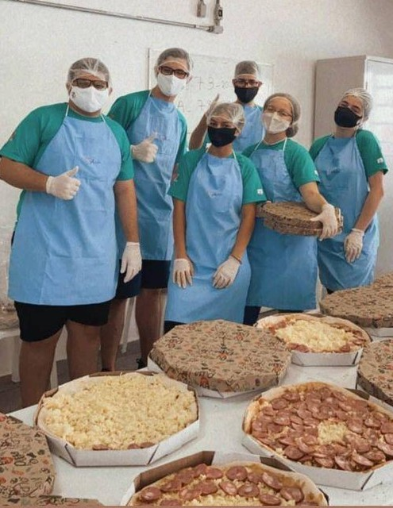

Voluntariado
Voluntariado como
Ex-Aluno
Mesmo após de me formar em 2020, minha escola antiga tem uma forte campanha de ações de ex-alunos. O Instituto São José, escola
do sistema Salesiano, propõe diversos movimentos para aqueles alunos que já saíram da escola, mas ainda desejam participar dos
projetos que o local oferece. Um deles é o grupo de Voluntariado, que reúne alunos e ex-alunos em suas ações. Ao longo do ano,
o grupo realiza visitas a instituições da região, buscando estar sempre a serviço do que for necessário para, por exemplo: arrecadação
de cestas básicas para a região do Beira Rio, em São José dos Campos; cozinhar pizzas para a Instituição Ágape, que é um local de
ensino especial para pessoas portadoras do espectro autista; momentos de recreação com crianças de escolas mais simples da cidade.
